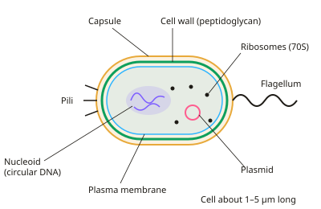

A-level Biology Year 12 · Topic 5
Prokaryotes, viruses and infectious disease
This topic is about the smallest causes of disease: bacteria and viruses, and how plants and animals defend themselves against them.
We will look at prokaryotic cells and how they divide, how viruses like HIV replicate, and the named diseases you need to know, from TB to potato blight.
Then we cover plant defences, the non-specific defences of animals, and how antibiotics work and why resistance is such a serious problem.
- 6 subtopics
- 211 questions
- Free: 5.1 notes and 10 questions
In this topic
- 5.1Prokaryotic cells and binary fissionFree below · 67 questions
- 5.2Viruses: structure, replication and HIVOpen in Full Marks · 30 questions
- 5.3Pathogens, transmission and named diseases (TB, HIV/AIDS, malaria, ringworm, potato blight)Open in Full Marks · 26 questions
- 5.4Plant defences against pathogensOpen in Full Marks · 24 questions
- 5.5Non-specific animal defences: barriers, inflammation and phagocytosisOpen in Full Marks · 33 questions
- 5.6Antibiotics, antibiotic resistance and controlling the spread of diseaseOpen in Full Marks · 31 questions
5.1 · Free notes
Prokaryotic cells and binary fission

Key points
- Prokaryotes (bacteria) have no membrane-bound nucleus and no membrane-bound organelles (no mitochondria, ER or Golgi). They are typically 0.5–5 µm long, much smaller than eukaryotic cells (10–100 µm).
- The genetic material is a single circular DNA molecule lying free in the cytoplasm in a region called the nucleoid. It is not associated with histone proteins, unlike the linear DNA of eukaryotes.
- Many bacteria also contain plasmids: small, circular, double-stranded DNA loops that often carry antibiotic resistance genes. They can be passed to other bacteria and are not essential for basic survival.
- Bacterial ribosomes are 70S (smaller). Eukaryotic cytoplasmic ribosomes are 80S. Both carry out translation.
- The cell wall is made of peptidoglycan (murein), a polymer of sugars cross-linked by short peptides. It supports the cell and prevents osmotic lysis. Plant cell walls are cellulose and fungal walls are chitin.
- Optional structures are a capsule (slime layer that protects against phagocytosis and drying out), flagella (motility) and pili (attachment and conjugation). All of these lie outside the cell surface membrane.
- Gram staining: Gram-positive bacteria have a thick peptidoglycan wall and stain purple. Gram-negative bacteria have a thin wall plus an outer membrane and stain pink/red.
- Binary fission: the circular DNA and plasmids replicate, the cell elongates and the DNA copies move apart. The membrane pinches in and a new cell wall (septum) forms. This gives two genetically identical daughter cells. No spindle forms, so it is not mitosis.
- Under ideal conditions growth is exponential: N = N₀ × 2ⁿ, where n = number of divisions = total time ÷ generation time. A growth curve has lag, log (exponential), stationary and death phases.
- Aseptic technique prevents contamination and growth of human pathogens. Flame loops, work near a Bunsen flame, use sterile equipment, tape lids and incubate at ≤25 °C in schools. Grow cultures on agar or in nutrient broth.
- Required practical (antimicrobial agents): measure the zone of inhibition around discs on a bacterial lawn. Area = πr², and a larger clear zone means a more effective agent. Include a control disc (sterile water).
- Viable counts use serial dilution and colony counting: cells per cm³ = colonies ÷ volume plated (cm³) × dilution factor.
In more detail
- Gram-negative walls: a thin peptidoglycan layer with an outer lipid membrane, so they stain pink/red with the counterstain and are often less affected by penicillin.
- Worked growth: a generation time of 20 minutes for 3 hours gives n = 9 divisions; starting from 50 cells, N = 50 × 2⁹ = 25 600.
- Growth curve phases: lag (adjusting, making enzymes), log/exponential (fastest division), stationary (births = deaths as nutrients run out), death (deaths exceed births).
- Worked viable count: 42 colonies from 0.1 cm³ of a 10⁻⁴ dilution → 42 ÷ 0.1 × 10⁴ = 4.2 × 10⁶ cells per cm³.
Practice
Prokaryotic cells and binary fission: 10 questions
Pick an answer to check it, or open the answer for the explanation.
1. Which structure is found in bacterial cells but never in plant, animal or fungal cells?
- 80S ribosomes in the cytoplasm
- A cell wall made of peptidoglycan
- A cell wall made of cellulose
- A cell surface membrane
Show answer
B: A cell wall made of peptidoglycan. Peptidoglycan (murein) walls are unique to bacteria. Plant walls are cellulose and fungal walls are chitin. All cells have a surface membrane, and bacteria have 70S, not 80S, ribosomes.
2. Which statement about prokaryotic DNA is correct?
- It is circular, free in the cytoplasm and not bound to histones
- It is circular and found only in plasmids
- It is enclosed in a double nuclear envelope
- It is linear and wound around histone proteins
Show answer
A: It is circular, free in the cytoplasm and not bound to histones. Prokaryotes have a single circular chromosome in the nucleoid, with no nuclear envelope and no histones. Plasmids are additional, smaller DNA loops, not the only DNA.
3. A bacterial population of 50 cells has a generation time of 20 minutes. Assuming no deaths, how many cells are present after 2 hours?
- 6400
- 300
- 3200
- 1600
Show answer
C: 3200. 2 h = 120 min ÷ 20 min = 6 divisions. N = 50 × 2⁶ = 50 × 64 = 3200 cells.
4. Which description best fits a bacterial plasmid?
- Small circular DNA loops that often carry antibiotic resistance genes
- Protein rings that make up the bacterial cell wall
- Circular DNA bound to histones inside a nucleus
- Large linear DNA molecules essential for bacterial survival
Show answer
A: Small circular DNA loops that often carry antibiotic resistance genes. Plasmids are small, circular, non-essential DNA loops, often carrying resistance genes that can be transferred between bacteria. They have no histones and bacteria have no nucleus.
5. What happens first during binary fission of a bacterium?
- The cell surface membrane pinches inwards
- Spindle fibres attach to the chromosomes
- A new cell wall forms across the cell
- The circular DNA replicates
Show answer
D: The circular DNA replicates. The circular DNA (and plasmids) replicate first. The cell then elongates, the membrane constricts and a septum forms. Bacteria do not use spindle fibres.
6. Why is binary fission not the same process as mitosis?
- It does not involve DNA replication
- It produces genetically different daughter cells
- It involves a single circular chromosome and no spindle
- It occurs only in eukaryotes
Show answer
C: It involves a single circular chromosome and no spindle. Prokaryotes have one circular chromosome and no spindle or chromosome condensation. DNA is still replicated, and the daughter cells are genetically identical.
7. An antibiotic disc produces a clear zone of diameter 14 mm. What is the area of the zone (π = 3.14), ignoring the disc size?
- 44 mm²
- 154 mm²
- 308 mm²
- 616 mm²
Show answer
B: 154 mm². Radius = 7 mm. Area = πr² = 3.14 × 7² = 3.14 × 49 ≈ 154 mm². Using the diameter as the radius would wrongly give 616 mm².
8. School practicals incubate bacterial cultures at no more than 25 °C. What is the main reason?
- Enzymes in bacteria denature at 30 °C
- Bacteria cannot grow above 25 °C
- Human pathogens grow best near 37 °C so are less likely to grow
- Agar melts at 37 °C
Show answer
C: Human pathogens grow best near 37 °C so are less likely to grow. Human pathogens are adapted to body temperature (37 °C). Incubating at ≤25 °C reduces the chance of growing them. Many harmless bacteria still grow well, and agar does not melt at 37 °C.
9. In the stationary phase of a bacterial growth curve the population size is constant because...
- the rate of cell division equals the rate of cell death
- all bacteria have stopped respiring and are dead
- the generation time has become much shorter
- bacteria are still adjusting to the medium
Show answer
A: the rate of cell division equals the rate of cell death. Limiting nutrients and accumulating toxic waste mean the number of new cells equals the number dying, so the viable count is level. Adjusting to the medium describes the lag phase.
10. A bacterium stains purple in the Gram stain. What can be concluded?
- It has an outer membrane and a thin wall
- It has a capsule but no plasmids
- It has no cell wall
- It has a thick peptidoglycan wall
Show answer
D: It has a thick peptidoglycan wall. Gram-positive bacteria retain crystal violet because of their thick peptidoglycan wall, so they stain purple. Gram-negative bacteria have a thin wall and an outer membrane and stain pink.
Keep going in Full Marks
Full Marks has 67 questions on Prokaryotic cells and binary fission (57 more than here), set out in practice levels. You also get notes and 3D models for all 6 subtopics of Prokaryotes, viruses and infectious disease, plus games, timed exams and past papers.
On your exam board
- AQATopic 2: Cells, Topic 4: Genetic information, variation and relationships between organisms
- OCR ATopic 2.1.1: Cell structure, Topic 4.1.1: Communicable diseases, disease prevention and the immune system
- OCR BTopic 2.1: Cells and microscopy, Topic 3.3: Disease and the immune system
- EdexcelTopic 2: Cells, viruses and reproduction of living things
- CambridgeTopic 1: Cell structure, Topic 10: Infectious diseases, Topic 11: Immunity